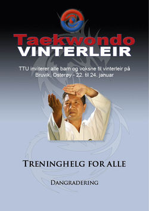

Arrangement
Vinterleir i TTU Hoveddojang

Årets vinterleir i TTUs hoveddojang på Bruvik, Osterøy finner sted 22.-24. januar og er en flott sjnse til å trene Taekwondo med andre utenfor klubben og stifte nye bekjentskaper. Arrangementet er åpent for alle aldre og beltegrader. Har du lyst til å dra? Prat med en av instruktørene og se informasjon på http://www.ttu.no eller TRYKK HER for invitasjonen.